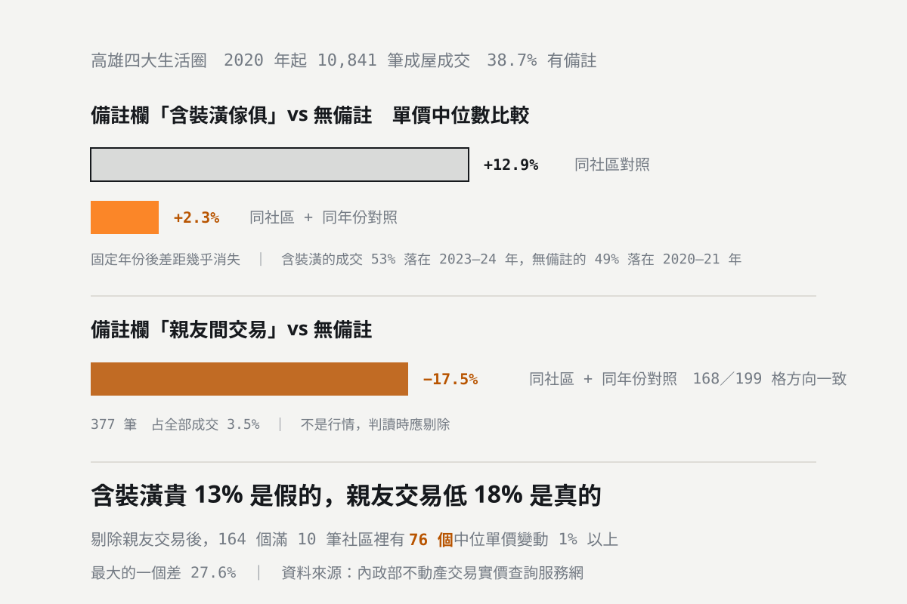

實價登錄的「備註欄」怎麼看？含裝潢貴 13% 是假的，親友交易低 18% 是真的
實價登錄每筆成交右邊都有一個備註欄，38.7% 的成交有註記。最常被拿來解釋價格的是「含裝潢傢俱」——這些成交的單價中位數確實比沒備註的高 12.9%，但把年份固定住再比，差距只剩 2.3%。真正要剔除的是「親友間交易」：同社區同年份對照，低 17.5%，199 個對照格裡有 172 格是負的。

統計基準：本文的統計以本站收錄 255 個社區的內政部實價登錄成交紀錄計算，統計基準日 2026-10-13，取成交日期 2020 年 1 月起、排除店面與預售的成屋成交共 10,841 筆，單價取合理區間 3–150 萬／坪（與站內其他統計同一套篩選條件）。備註分類以關鍵字比對實價登錄「備註」欄原文，同一筆可能同時命中多類。對照的作法是：分別取有該註記的成交與完全沒有備註的成交，各算單價中位數後相除，再取所有對照單位比值的中位數；有註記的至少 1 筆、無備註的至少 2 筆才列入對照。「同社區同年份」把對照單位縮到每一個社區的每一個年份，用來排除房價隨時間變動造成的假差距。資料每月持續累積（內政部於每月 1、11、21 日批次公告，本站於公告隔日更新）。
看實價登錄的時候，大部分人只看單價、坪數、樓層。最右邊那一欄「備註」常常被跳過——但它是內政部唯一會告訴你「這筆成交不太一般」的地方。
本站收錄的 10,841 筆成屋成交裡，有備註的占 38.7%。問題是：哪幾種註記真的會動到價格，哪幾種只是看起來會？
備註欄實際出現什麼
| 註記類型 | 筆數 | 占全部成交 |
|---|---|---|
| 預售屋／土地及建物分件登記 | 1,412 筆 | 13.0% |
| 含裝潢、傢俱或家電 | 1,508 筆 | 13.9% |
| 親友、親屬間交易 | 377 筆 | 3.5% |
| 陽台外推 | 279 筆 | 2.6% |
| 增建、加建或夾層 | 243 筆 | 2.2% |
| 毛胚屋 | 124 筆 | 1.1% |
| 瑕疵、漏水或事故 | 45 筆 | 0.4% |
| 帶租約 | 28 筆 | 0.3% |
剩下的多半是「含土地增值稅或地政士服務費」、「雨遮不計價」這類程序性註記，不影響你對價格的判讀。
「含裝潢傢俱」比較貴——但貴的不是裝潢
直覺上，備註寫了含裝潢、含傢俱的成交應該比較貴，因為買方多付了裝潢的錢。資料第一眼也支持這個說法：
| 對照方式 | 含裝潢／傢俱 vs 無備註 | 可對照數 | 方向一致度 |
|---|---|---|---|
| 同社區對照（不分年份） | +12.9% | 224 個社區 | 183／224 偏高 |
| 同社區同年份對照 | +2.3% | 440 個社區×年份 | 265／440 偏高 |
同社區比是 +12.9%，把年份也固定住只剩 +2.3%。十個百分點是哪裡來的？看成交的年份分布就知道：含裝潢傢俱的成交有 53% 落在 2023–2024 年，而沒有備註的成交有 49% 落在 2020–2021 年。這幾年高雄房價本身就漲了一段——比的其實是年份，不是裝潢。
440 個「社區×年份」對照格裡，含裝潢的一方比較貴的只有 265 格（60%）。方向不夠一致，幅度也只有 2.3%，所以結論是：備註寫含裝潢傢俱，不足以解釋你看到的單價偏高。要解釋就得先看年份。
這也反過來說明一件事：如果你是賣方，想用「我附裝潢」在單價上多要一成，資料不站在你這邊。裝潢對成交速度的幫助通常比對價格大。
「親友間交易」低 17.5%，這個要剔除
同樣的方法套在親友交易上，結果完全不同：
| 對照方式 | 親友交易 vs 無備註 | 可對照數 | 方向一致度 |
|---|---|---|---|
| 同社區對照（不分年份） | −16.3% | 173 個社區 | 129／173 偏低 |
| 同社區同年份對照 | −17.5% | 199 個社區×年份 | 168／199 偏低 |
兩種算法結果接近，固定年份後差距還變大，而且 199 個對照格裡有 168 格（84%）方向一致。這不是雜訊，是真的。
原因不難理解：親友間移轉房地，價格本來就不是在市場上競爭出來的，常見的是按成本價、按貸款餘額，或帶有贈與性質。這種成交不代表行情。
剔不剔除，會影響你看到的社區價位。在成交滿 10 筆、且有親友交易的 164 個社區裡，把親友交易剔掉之後，有 76 個社區的單價中位數會變動 1% 以上，最大的一個差了 27.6%。如果你只抓三五筆成交來推估一個社區的行情，裡面混進一筆親友交易，整個判斷就偏掉了。
其他幾種註記要怎麼看
- 01 「預售屋、或土地及建物分件登記案件」（1,412 筆，最常見）：代表這筆交易的土地與建物可能是分件登記的，單一筆紀錄的總價不一定是整戶的完整成交金額。看到這個註記，要特別確認總價與坪數對不對得起來。本站的樣本不足以量化它對單價的影響（只有 11 個社區×年份可對照），所以不下結論。
- 02 「陽台外推」（279 筆）：外推的面積不會登記在建物面積裡，但實際可用空間變大。資料上同社區同年份比高 1.8%，114 格裡 70 格偏高——幅度太小、方向不夠一致，不值得當成價格因素。它真正的意義是法規風險：外推屬違建，可能被要求回復原狀。
- 03 「增建、加建或夾層」（243 筆）：和陽台外推同一類問題，權狀面積不含增建部分，所以算出來的「單價」會偏高（分母小）。看到這個註記，要問清楚增建的位置與現況。
- 04 「毛胚屋」（124 筆）：沒有做任何裝修的交屋狀態，買方要自己從零開始裝潢。同樣條件下價格應該偏低，但要加上一筆完整的裝潢預算才是你的真實成本。
- 05 「瑕疵、漏水、事故」（45 筆）：筆數很少但一定要看。這類成交的價格不能當成同社區其他戶的行情參考。
實際怎麼用
- 01 看到價格明顯偏低，先看備註欄有沒有「親友」。這是最常見、也最容易誤導人的一種。整個社區只有那一筆特別便宜，八成就是它。
- 02 看到價格偏高，不要先怪裝潢，先看年份。資料顯示裝潢的解釋力只有 2.3%，年份的解釋力大得多。
- 03 算單價之前先確認面積。有陽台外推或增建註記的，權狀面積小於實際使用面積，單價會被高估。
- 04 只抓三五筆就下結論最危險。社區成交筆數少的時候，一筆非常規交易就足以把中位數拉偏 20% 以上。
- 05 備註欄是內政部唯一的例外標記，但它不完整。沒有註記不代表這筆成交一定正常，只代表申報人沒有填。
本站每個社區頁的逐筆成交都附上實價登錄的原始備註，不經改寫——你可以直接看到哪幾筆有註記、寫了什麼。社區總覽看得到全部 255 個社區。
澄果團隊諮詢電話：07-9766977
資料查核日期：2026 年 10 月 13 日。統計範圍為本站收錄 255 個社區中成交日期 2020 年 1 月起、排除店面與預售的成屋成交 10,841 筆，單價取 3–150 萬／坪。備註分類以關鍵字比對實價登錄「備註」欄原文，同一筆可能同時命中多類，故各類筆數之和大於有備註的總筆數。對照時有註記的成交至少 1 筆、無備註的至少 2 筆才列入；「同社區同年份」把對照單位縮到每個社區的每個年份，以排除房價隨時間變動造成的假差距。「分件登記」僅 11 個社區×年份可對照，樣本不足，本文未對其價格影響下結論。